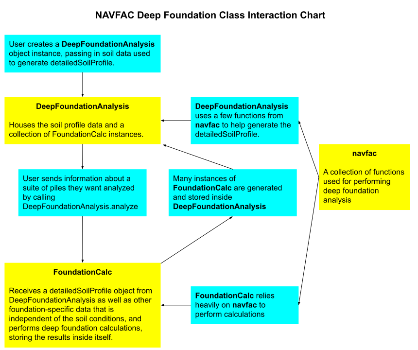

NAVFAC Deep Foundations Design Tool
Live Site Link
Documentation
API GitHub
This application performs axial capacity analysis for a variety of deep foundation types in stratified soil profiles. The calculations are adapted from the NAVFAC Foundations & Earth Structures Design Manual 7.02, last edited September 1986. This tool allows users to input a custom soil profile with several layers, select a foundation type and installation type, and input a selection of foundation widths and bearing depths to analyze simultaneously.
After submitting an analysis, the user will be presented with a collection of summary tables showing the ultimate and allowable axial capacity of each foundation in compression and in tension. Beyond the summary tables, the user can view a detailed output for each individual pile showing the results of each calculation. The results may be downloaded in PDF form, and users can save their projects to enable tweaking the input parameters. Additionally, users can clone projects so they can easily analyze different pile types without needing to input the soil data again.
Disclaimer
This application is not a substitute for engineering knowledge, and this README is not a design tutorial. Any engineer who uses this tool is expected to understand the NAVFAC analysis process as a prerequite and to review the calculations for accuracy. The author of this program takes no responsibility for any engineering decisions made by anybody using this application. Use it at your own risk.
Caculations
Calculations are performed based on established soil science and the NAVFAC Foundations & Earth Structures Design Manual 7.02, last edited September 1986. This manual is available to download for free at https://web.mst.edu/~rogersda/umrcourses/ge441/DM7_02.pdf.
The calculation package is organized into three main files:
navfacFunctions.js, a collection of geotechnical calculation functionDeepFoundationAnalysis.js, DeepFoundationAnalysis class which parses the user input and stores analysis resultsFoundationCalc.js, FoundationCalc class which performs and the design calculations for an individual pile
The basic use-case for these classes is as follows:
// Create an instance of DeepFoundationAnalysis with the required inputs
let myAnalysis = new DeepFoundationAnalysis(
layerDepths, layerNames, layerUnitWeights, layerPhis, layerCohesions,
groundwaterDepth, increment, ignoredDepth);
// Call analyze() with the required inputs to create several instances of
// FoundationCalc behind the scenes and save results into myAnalysis
myAnalysis.analyze(material, pileType, widthArray,
bearingDepthArray, FS, ignoredDepth);
// Access the calculation results with the calculations parameter
console.log(myAnalysis.calculations.compressionAnalyses;
console.log(myAnalysis.calculations.tensionAnalyses;
The diagram below illustrates how each of these parts interact with each other behind the scenes: 
Rules to follow when implementing the calculation package
This calculation package itself does not enforce correctly formatting the data input, so it's up to the developer to ensure that correctly-formatted data makes its way into the calculations. Practically, that means checking the rules layed out below on the user side before beginning to operate with the data.
TO BE CLEAR, If these rules are not applied before attempting to perform calculations, the results will at best be completely and obviously broken, and at worst, quietly and unknowingly broken.
Data Input Rules
DeepFoundationAnalysis constructor
- When instantiating a new
DeepFoundationAnalysis, the following parameters must all be arrays of equal length:layerDepthslayerNameslayerUnitWeightslayerPhislayerCohesions
- The value of
incrementmust be a value that every other depth value involved in the calculation is a multiple of. For example, if the increment is 1, then I could havelayerDepthsof [3, 6, 20], agroundwaterDepthof 17, and abearingElevationof 15. However, I could not have, for example, abearingElevationof 14.5 because that 14.5 is not a multiple of 1. If you want to use layers with a 0.5 foot resolution, you need to use anincrementof 0.5 feet. Lastly, I would never recommend using "uneven" values like 0.33 or 1.5 forincrement. While they could theoretically work, nobody needs that kind of confusion in their life. layerDepthsmust be an array of positive numbers arranged in ascending order with no duplicates.layerNamesmust be an array of strings.layerUnitWeightsmust be an array of positive numbers.layerPhismust be an array of integers with values of either 0 (for cohesive soils) or from 28 to 40 inclusive (for granular soils).layerCohesionsmust be an array of numbers with values of either 0 (for granular soils) or positive values (for cohesive soils).ignoredDepthmust be any non-negative number following the increment rule.
FoundationCalc constructor
detailedSoilProfileshould be thedetailelSoilProfilesaved as a property withinDeepFoundationAnalysis.materialmust be one of the following strings:- "TIMBER"
- "CONCRETE"
- "STEEL"
pileTypemust be one of the following strings:- "DRIVEN-SINGLE-H-PILE"
- "DRIVEN-SINGLE-DISPLACEMENT-PILE"
- "DRIVEN-SINGLE-DISPLACEMENT-TAPERED-PILE"
- "DRIVEN-JETTED-PILE"
- "DRILLED-PILE"
widthmust be an array with either 1 or 2 positive numbers.- 1 number of the pileType is NOT "DRIVEN-SINGLE-H-PILE"
- 2 numbers if the foundation IS "DRIVEN-SINGLE-H-PILE"
- If two numbers are passed, the smaller number should be first.
bearingDepthmust be a positive multiple ofincrementAND must be less than the deepest depth in the soil profile (ie:bearingDepth < layerDepths[layerDepths.length-1]).incrementis the same increment fromDeepFoundationAnalysis.isCompressionis a boolean. Must be true or falseFSmust be a positive number, and should be greater than 1. The recommended value is 3.ignoredDepthis the sameignoredDepthfromDeepFoundationAnalysis.
DeepFoundationAnalysis.analyze()
material- See FoundationCalc constructor.pileType- See FoundationCalc constructor.widthArraymust be an array of widths meeting the requirements in FoundationCalc constructor.bearingDepthArraymust be an array of depths meeting the requirements in FoundationCalc constructor.FS- See FoundationCalc constructor.
Deployment
Website
Automatic deployement is enabled with Netflify. Just push new changes to master to trigger a new deploy.
Docs
Documentation is hosted on Github Pages. To update the documentation, first regenerate the docs by running
npm run docs
Then, deploy changes to the gh-pages branch. gh-pages is configured to look in the docs folder as the source, so no additional work is needed.